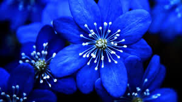
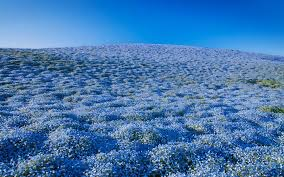

Blues are a color that’s a bit challenging to come by in the gardening world. The two best flowers for featuring true blues are
Forget-me-not sand Himalayan Blue Poppy. Unfortunately, Himalayan Blue Poppies are extremely difficult to grow and are pretty
hard to come by. Luckily for usForget-me-nots are much more forgiving, and they deliver a whole batch of pretty little blue flowers
from spring tosummer. They’ll do well in full sun or part shade, and should naturalize well in your landscape.
Back to Home Page...


